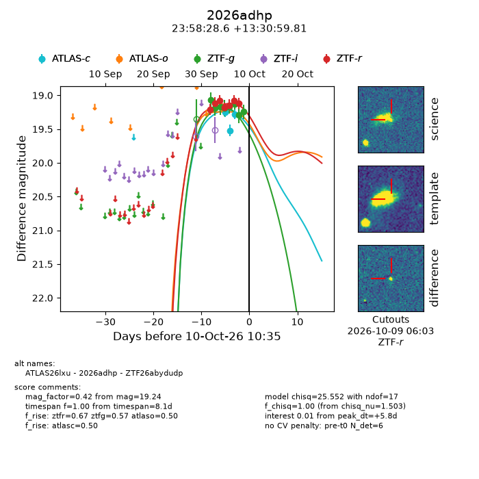
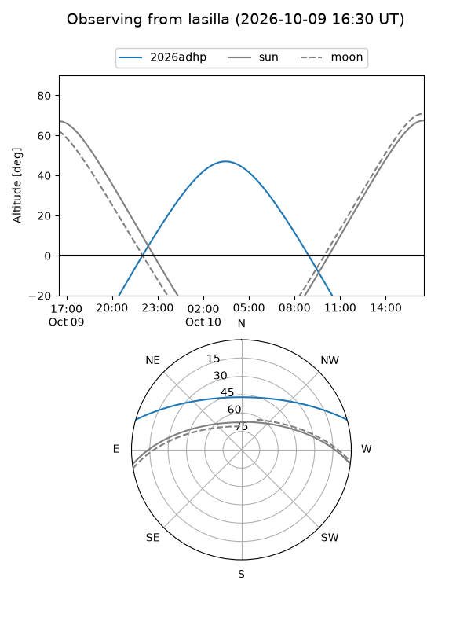
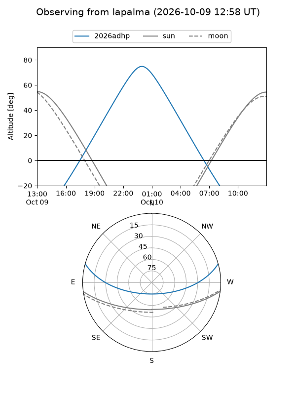
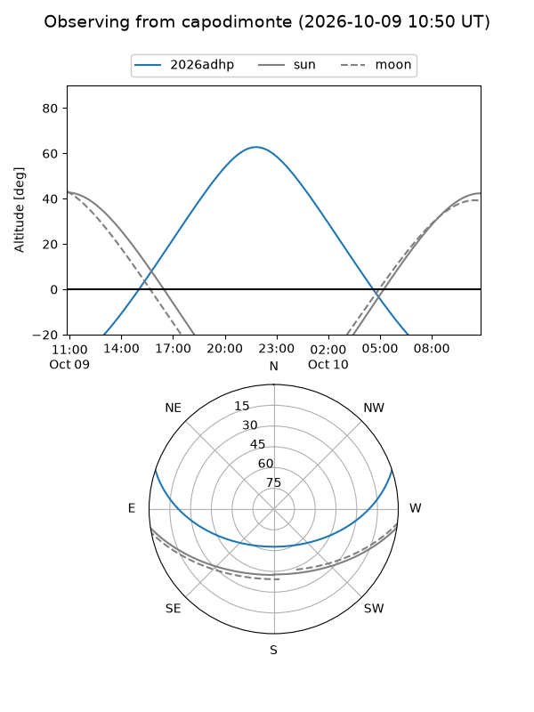
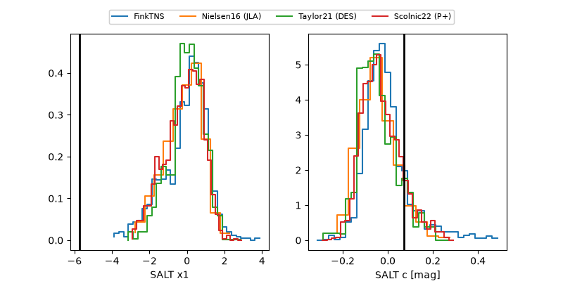

2026adhp
Target 2026adhp at 2026-10-10 10:36
Aliases and brokers:
FINK-ZTF: ztf.fink-portal.org/ZTF26abydudp
Lasair-ZTF: lasair-ztf.lsst.ac.uk/objects/ZTF26abydudp
ALeRCE-ZTF: alerce.online/object/ZTF26abydudp
YSE-PZ: ziggy.ucolick.org/yse/transient_detail/2026adhp
TNS name: wis-tns.org/object/2026adhp
Direct TNS query: direct search
alt names
ZTF26abydudp (ztf,fink_ztf)
2026adhp (tns,yse)
ATLAS26lxu (atlas)
Coordinates:
equatorial (ra, dec) = 359.6190,+13.51661
equatorial (HMS+DMS) = 23:58:28.56,+13:30:59.81
galactic (l, b) = (103.7345,-47.37135)
Flags:
peak dt: +5.8
Photometry:
last atlasc=19.29, atlaso=19.19, ztfg=19.24, ztfr=19.12
3 atlasc, 1 atlaso, 8 ztfg, 7 ztfr detections
Lightcurve

Visibility



Additional plots
